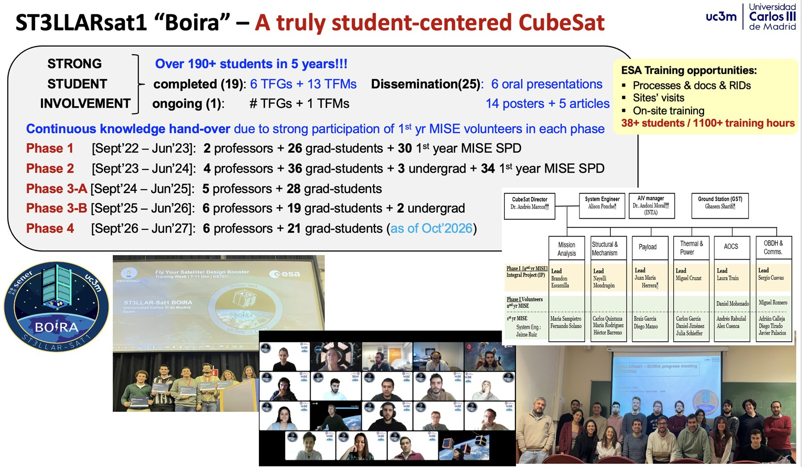
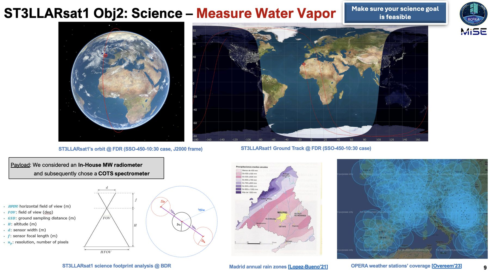
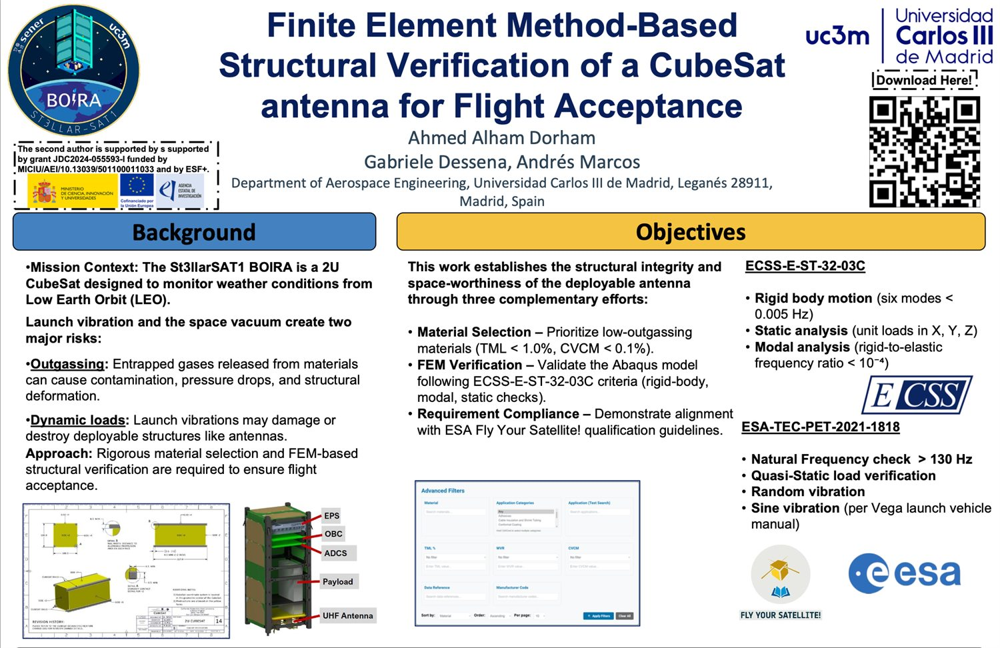
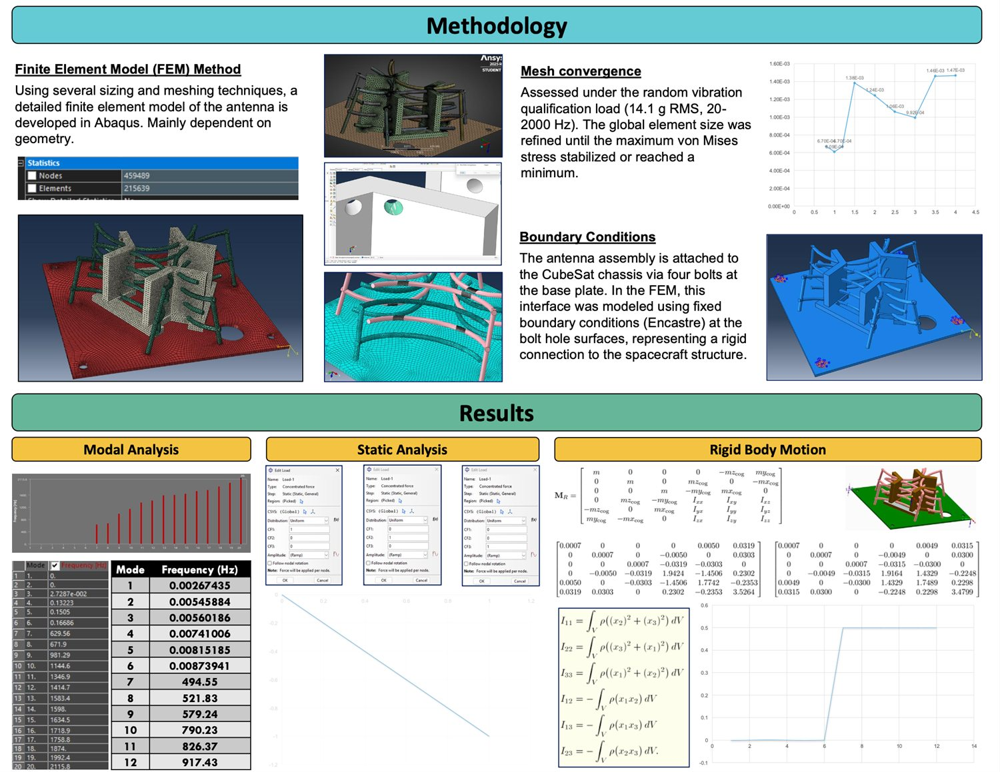
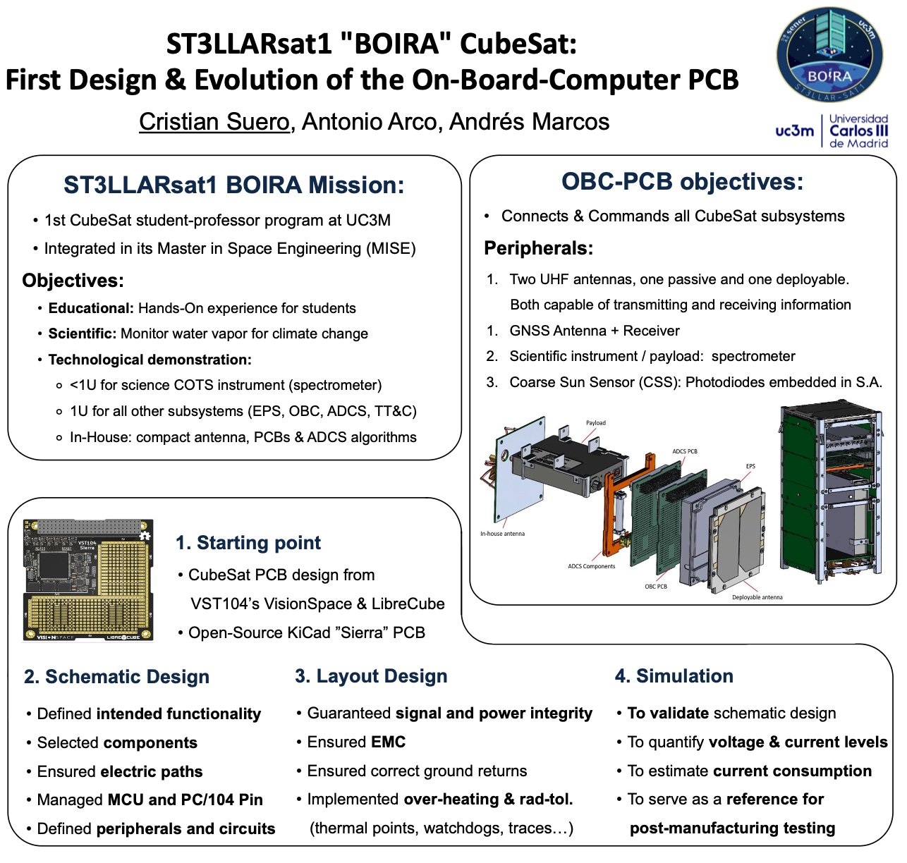
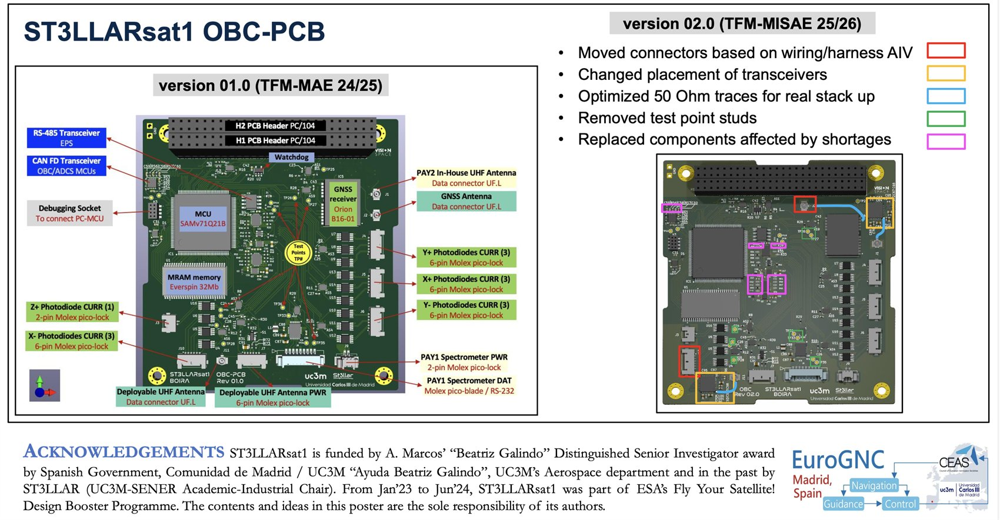
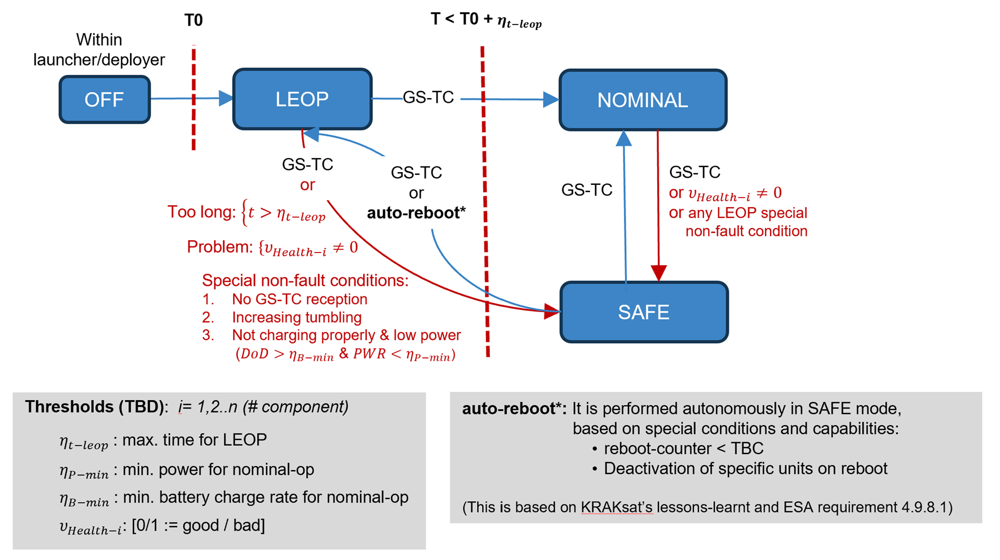
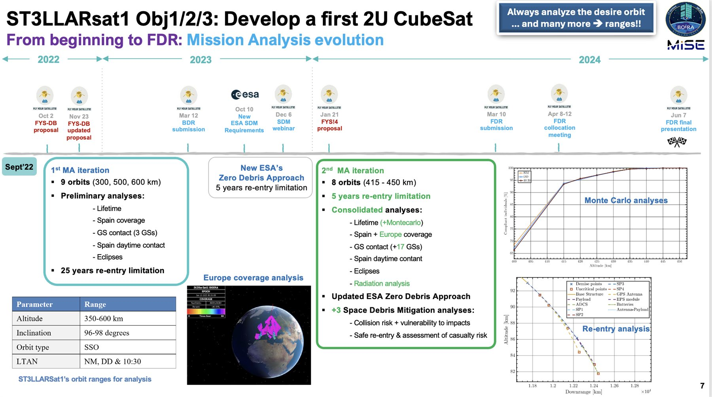
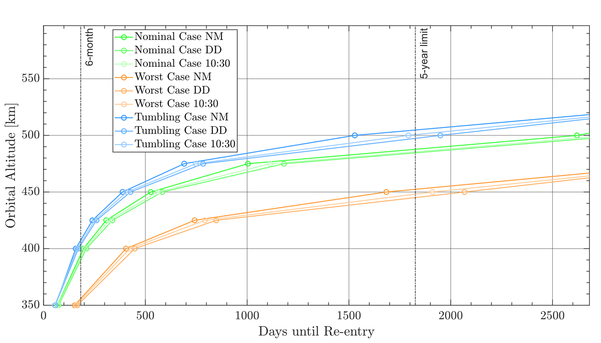
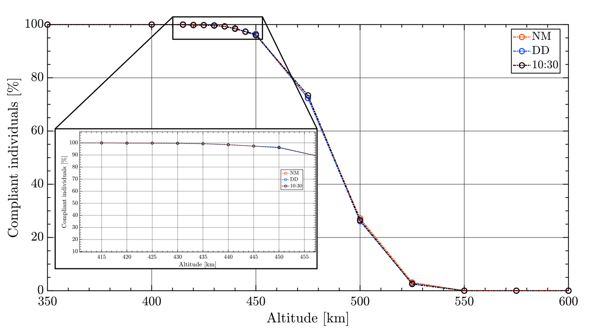

Mission
Objectives, concept of operations, mission analysis and orbit
Mission objectives
The main ST3LLARsat1 mission objectives are formalized in the table below and discussed next:
| Req. ID | Title | Requirement |
|---|---|---|
| MO-1 | Educational | To provide UC3M MISE students with hands-on experience in a real space project |
| MO-2 | Scientific | To monitor local climate change by measuring atmospheric water vapor (WV) |
| MO-3 | Technological | To design, build, launch, and operate a 2U CubeSat |
| MO-4 | Technological | To perform in-orbit demonstration of in-house technologies |
MO-1 Educational
The integration of the ST3LLARsat program, and its missions, within UC3M’s Master in Space Engineering (MISE) serves to fulfill this first objective. As indicated in the metrics of the overview page, this objective has been amply achieved already within the first 5 years of the program since over 190 students have participated, resulting by November 2026 in 20 theses defended and 25 dissemination outputs –plus over 38 students having been selected and funded by ESA to attend one of their training opportunities within ESA Academy during these 5 years. More details on the integration of the ST3LLARsat program (and ST3LLARsat1 mission) in the MISE are given in the ST3LLARsat program page.

MO-2 Scientific
This objective is addressed by carrying a scientific payload (PAY-1), a small (~1U) COTS spectrometer selected to measure water vapor (WV). Its successful demonstration (i.e. taking and transmitting a valid WV measurement) will pave the way to release constellations of low-cost climate change ‘sensors’, which despite low-accuracy have a much faster revisit and will complement high-cost/high-accuracy, but sparse in time, measurements from, for example, Sentinel satellites. This will enable in the future to emulate in space the impact that deployment of a multitude of low-cost weather stations on Earth had on weather forecasting.
It is highlighted that the state-of-the-art technologies for measuring WV from Space have to do mostly with the retrieval of a spectrum in the specific wavelengths at which this component can be extracted. From the existing types of instruments to perform this task, the team performed a study (see Figure 3) looking at the possible orbits, resulting ground-tracks, and coverage of the latter with ground weather stations in Madrid, Spain and Europe to ensure that the optical spectrometers’ characteristics were scientifically viable. From this study, technical and scientific requirements were derived such as that the selected optical spectrometer shall only take measurements during daytime to improve the quality of the scientific data. This is because this type of scientific technology absorbs the light coming from the observed field-of-view and using a collimating lens, it shows its intensity as a function of the wavelength. The spectrum values in which WV is displayed are well known and characterized by several experiments. The wavelength range measured by the optical spectrometer must match at least one of the different channels at which is centered the WV. This is one of the reasons why Near-Infrared (NIR) was the spectral band selected to meet the needs of this mission.

MO-3 Technological
This objective structures the full mission development, and will be achieved once ST3LLARsat1 is completed, launched, and operated by our students from the CubeSat Operation Center (CSOC) at our center for space technology and nano/micro-satellites (CSAT).
MO-4 In-orbit demonstration of in-house technologies
With respect to this last objective, it is clear that achieving MO-3 will allow demonstrating in-orbit all (or some) of the four in-house technologies aforementioned, which are described in more detail next:
Payload 2 – a non-deployable, dual-circular antenna
This is a robust, non-deployable CubeSat antenna designed by UC3M PhD students from the department of Telecommunications to eliminate the single point of failure caused in CubeSats by deployable antennas. Distinctive features of this design include its low directivity (ensuring extensive coverage of the Earth's surface from orbit), its size (fitting in less than a 1U face), and more importantly, it does not need to be deployed (mitigating the risk of a single-point failure in any Space mission). The last aspect is paramount since antenna deployment operations add design complexity and a potential point of failure due to malfunctioning of the antenna deployment mechanisms. This, together with deployable appendages such as solar panels, is one of the main causes of small-satellite mission failures. Since communication is critical for mission success, and this payload is experimental, we also carry a flight-heritage, COTS, deployable antenna.


In-house OBC & ADCS PCBs
With the help of aeronautical and electronics UC3M master students (and using as baseline open-source schematic and Gerber files from a space OBC-PCB project from the LibreCube community, see Figure 5), ST3LLARsat1 is developing the PCBs for the two ‘brains’ of our CubeSat: the onboard-computer (OBC) and the attitude determination and control system (ADCS). Each has a dedicated processor (MCU) and memory in order to provide redundancy and capability for future deployment of more advanced algorithms (including FDIR and onboard estimation).


ADCS algorithms
Finally, we are developing the ADCS algorithms, from the standard TRIAD and Bdot to advanced EKF algorithms. A coarse Sun Sensor (CSS) is also being developed in-house, and its development includes selection of the photodiodes, defining their placement along the solar panels, and coding the algorithm to determine the attitude with respect to the Sun position. The algorithms are always validated starting with simulations and then progressing to SIL and HIL tests using CSAT's V&V testbenches (some, specifically developed to test our CubeSat).
Concept of Operations (ConOps): mission phases and timeline
Once ST3LLARsat1 is fully assembled and ready for integration, it will be inserted into a picosatellite orbital deployer (POD), or similar CubeSat ejector, to be mounted in the chosen launch vehicle. Typically, the launch vehicle will have a main payload to be released at a particular orbit, and CubeSats piggyback this payload and are ejected subsequently after enough time has passed to avoid any interferences.
The minimum nominal mission lifetime for ST3LLARsat1 is 6 months from T0 (as per ESA-FYS Design Specification1 FDS-VCD 4.9.1), and after passivation for deorbiting, a natural decay within 5 years should occur in order to comply with new “Zero Debris” requirements (FDS-VCD 4.11.1). A priori, it is not possible to know the exact mission lifetime since it is highly dependent on the deployment orbit, but the minimum lifetime and maximum deorbiting must be satisfied.
From the moment of integration with the POD and while a CubeSat is within the launch vehicle, every system must be OFF (FDS-VCD 4.9.2). Once the CubeSat leaves the POD, that time is marked as T0 and the LEOP (Launch and Early Operations Phase) begins, see Figure 6 for the mission phases and the threshold conditions to switch between them.
Operations can only start 30 minutes after T0 (as per FDS-VCD 4.9.). These operations involve functional checks of EPS, OBC, ADCS and TTC components. Then, a detumbling procedure starts to slow down the rotation rate of the CubeSat. The Design specifications also determine a threshold for being allowed to transmit: 45 minutes after T0 (as per FDS-VCD 4.9.5). Uplink and downlink tests will be carried out between ST3LLARsat1 and the ground station at UC3M. Upon successful completion, the NOMINAL phase starts, and all the subsystems are turned ON except for the spectrometer, which follows a scientific operation plan based on location (priority is to take measurements first over Spain, then Europe, and then over the World), time (active only for an established duration required to take from 1 to n scientific measurements), and operational status (e.g. not to be used during low-power and/or eclipses). In case of an issue during the nominal mode or as commanded by direct ground intervention, ST3LLARsat1 can enter SAFE mode.

The OFF mode is not counted as an operational mode since it refers to the configuration of the CubeSat prior to launch and orbit deployment, which is mandated to have all subsystems off, and all energy/communication inhibited by remove-before-flight (RBF) and by deployment switches. Thus, the actual operational modes of ST3LLARsat1 are three (LEOP, NOMINAL, SAFE):
Launch and Early Orbit Phase (LEOP)
Manages automated subsystem initialization immediately post-ejection. LEOP initiates after mandatory 30-minute silent window by performing internal checks, deploying the primary UHF antenna, and executing the B-dot detumbling algorithm to reduce the angular rates (< 0.5°/s). Finally, it will attempt to establish communication with ground by sending the first beacon telemetry from T0+45mins.
If ST3LLARsat1 stays for too long in this mode (T > T0 + ηt-LEOP), or if there is a health issue in any of the components (υHealth-i ≠ 0 with i=1,2…n), or if any of several no-fault conditions occur (from no reception of ground commands, increased tumbling, or no proper charge while low power), then the system is designed to automatically engage the SAFE mode.
From the SAFE mode is possible to come back to LEOP by ground-station command (GS-TC) or autonomously by an “auto-reboot”. The latter is a safety feature implemented based on KRAKsat’s lessons-learnt2 and ESA-FYS requirement FDS-VCD 4.9.81. It consists of having a number of allowed reboots (based on a reboot-counter zeroed-out when “auto-reboot” is engaged or SAFE is entered) that when the counter is surpassed, deactivates specific components prior to the reboot and restart of LEOP.
Nominal
Governs primary scientific (PAY-1) and platform operation (tech.IOD-2/3/4). In this mode, performs internal health checks, optimizes solar array power generation, maintains attitude pointing, executes spectroradiometer (scientific) data acquisition cycles, handles the on-board data and memory exchanges, manages routine telemetry downlinks and uplink during ground-station passes, and finally repeats the latter using the non-deployable experimental antenna (PAY-2).
Safe
Serves as the automated fallback state triggered by on-board Fault Detection, Isolation, and Recovery (FDIR) algorithms (e.g., thermal anomalies, internal component health checks) or by any of the no-fault or time-based conditions described before. Safe mode deactivates non-essential payload and equipment, aligns solar panels for maximum power generation, configures the UHF transceiver to beacon “emergency” mode, and performs internal health checks to obtain the “emergency” information and send it to ground until ground-station intervenes (GS-TC) or an “auto-reboot” occurs. GS-TC can command the system to go back to LEOP or directly to Nominal, while “auto-reboot” will always go back to LEOP. System recovery, that is, the solution of any health indicator, will not automatically return ST3LLARsat1 to the original mode from which it entered SAFE.
The specific values for the thresholds indicated above and in the figure will be defined during the final AIVT activities. The definition of the main time and health indicators are:
- ηt-LEOP
- maximum time at LEOP
- ηP-min
- minimum power for Nominal operations
- ηB-min
- minimum battery charge for Nominal operations
- υHealth-i
- i-th component (i=1,2…n) health indicator [0=healthy / 1=faulty]
Mission analysis
As a first step, a thorough review of the orbital regime of past CubeSat programs (especially those belonging to ESA-FYS! program) was performed, considering orbital parameters such as altitude, inclination, and Local Time of the Ascending Node (LTAN). Most of the previous ESA-FYS! missions had been launched to Sun-Synchronous Orbits (SSO) due to their advantageous characteristics (i.e., constant illumination conditions). In addition, most Low Earth Orbit (LEO) launchers often target SSO as suggested by the inclination parameter, which is in the range of 96-98 degrees (depending on the altitude). Regarding the LTAN, most of them employ a Dawn-Dusk or 10:30 LTAN, the latter being more suitable for Earth Observation due to avoidance of Sun glint.
Next, the most relevant aspects relating the mission objectives to the orbit were studied. The main scientific goal of ST3LLARsat1 (MO-2) is to take water vapor measurements during daylight hours (primarily over Spain first, then Europe, and finally across the World), for at least a 6-month mission time. In order to target latitudes of Spain and Europe, this objective imposes constraints on the inclination, altitude and LTAN of the orbit. Furthermore, a bit over a year into the project, a more restrictive requirement for the MA team appeared, that of considering the 5-year re-entry restriction enforced by ESA in their new (late October 2023) “Zero Debris approach” policy. See for more details the next subsection “Orbit flexibility”.
Regarding launch opportunities for CubeSats, initially several launch providers were contacted, but the estimated prices for logistics and launch services were prohibitive in terms of monetary cost for a university program. Therefore, the only option was to apply to any of the free opportunities for launch that appear from time to time (typically, from the ESA-FYS! Program, other national European programs, and/or international competitions). Since these opportunities force to launch at the orbits they consider, it was decided to analyze for ST3LLARsat1 an entire range of orbits, instead of just focusing on a “nominal” one. In particular, we focused on SSO orbits, but with a wide altitude, inclination, and LTAN range, see Table 2:
| Parameter | Range |
|---|---|
| Altitude | 350–600 km |
| Inclination | 96–98 degrees |
| LTAN | Dawn-Dusk, Noon-Midnight & 10:30 hours |
| Orbit type | SSO |
An incremental set of analyses, see Figure 7, was performed during the first two phases of the project (ESA-FYS! BDR and FDR phases) using different software tools (ESA’s DRAMA, a.i. Solutions’ FreeFlyer, CNES’ STELA, and CNES’ OMERE) to ensure that ST3LLARsat1 fulfilled all mission analysis’ requirements. In a first iteration (phase 1), 9 orbits (3 altitudes x 3 inclinations) were studied for: (i) lifetime, (ii) coverage of Spain, (iii) ground station contact (with 3 stations), (iv) daytime contact in Spain, and (v) eclipses. This first set considered the 25 years re-entry limitation. Subsequently, during phase 2, and given the new 5 years re-entry limitation, a focused altitude range (415-500 km) was used to study 8 orbits, and the analyses expanded to: (i) Monte Carlo for the lifetime, (ii) Europe coverage, (iii) 17 ground stations in the SatNOGS network, (iv) radiation analyses, plus 3 debris mitigation analyses: (v) collision risk, (vi) vulnerability to impacts, and (vii) safe reentry & casualty risk assessment.

Orbit flexibility
ST3LLARsat1 will operate in a Sun-Synchronous Orbit (SSO) to take advantage of the constant illumination conditions offered by this type of orbits as well as to cover all the European region (the main area of interest in the mission), since lower inclination poses a limit on the latitudes that can be visited by the spacecraft.
During our participation in ESA FYS!-DB program (Jan’23-Jul’24), the mission analysis (MA) team analyzed a wide range of possible scenarios in terms of altitude, LTAN, and inclination (see again Table 2). A methodological MA process was established to calculate orbits and their impact, using always nominal and worst-cases (for power, science, thermal…). This process proved to be very effective when at the end of 2023, only a few months before FDR, ESA asked to consider the new ‘Zero Debris’ regulations. Among other requirements, this regulation limits the orbit lifetime of satellites in the LEO protected region from 25 to 5 years (starting from the orbit injection epoch). This substantial change significantly decreases the range of altitudes in which ST3LLARsat1 was compliant since it does not have propulsion. The new analyses included the effect of performing special maneuvers with the CubeSat (such as controlled tumbling at high angular rates or attitudes resulting in increased ballistic coefficient). Ultimately, the ranges presented in Table 3 demonstrate ST3LLARsat1 operational orbit flexibility.
| Orbit type | Altitude | Inclination | LTAN |
|---|---|---|---|
| SSO | 415–500 km | 96–98 deg | Noon-Midnight (12:00h) / Dawn-Dusk (18:00h)* / 10:30h |
* Preferred LTAN.
De-orbiting
The de-orbiting phase of the mission needs to be carefully assessed in order to attain complete fulfillment of the re-entry of the spacecraft. Moreover, with the more stringent requirements defined by the new “Zero Debris approach”, this task becomes necessary to be able to operate within the European Space sector. In particular, as aforementioned, the maximum allowed time for re-entry for a spacecraft with no propulsion has now been reduced by ESA to 5 years. This restricts the range of altitudes at which such a spacecraft can fulfill the restriction. For ST3LLARsat1, this meant that we must aim for an uncontrolled re-entry into Earth’s atmosphere in less than 5 years since launch. In addition, there are plenty of Space Debris Mitigation (SDM) requirements dealing with other aspects than lifetime, such as collision risk, passivation, and fragmentation to name a few.
This subsection briefly summarizes the main outcomes of the analysis performed with respect to ST3LLARsat1’s lifetime, see Figures 8 and 9. The former figure shows three cases (nominal, worst, and detumbling -specified in terms of drag area) in terms of days until re-entry versus orbital altitude, considering for each case a different LTAN. As summarized before in Table 3, the altitude range that is compliant with both the 5-year restriction and the 6-month lower limit for the operational lifetime is from 415 to 500 km. The latter figure extends this first analysis via a Monte Carlo approach to show the percentage of individuals (out of 1,000 random runs) which are compliant with the 5-year requirement. As the altitude increases, the compliance decreases drastically. For instance, there is a substantial difference between a nominal altitude of 425 km and 450 km. However, focusing on the 415-450 km range (the cases shown in Figure 9), all of the individuals are above the required 90% successful re-entry mark. Thus, according to this analysis, achieving a successful de-orbit into Earth’s atmosphere should be attainable for ST3LLARsat1. Further analyses related to fragmentation, collision risk and other SDM measures were considered, but are not presented here for the sake of conciseness.

